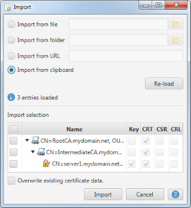

Import
This dialog is used to import one or more certificates from an external source.

Certificate data can be imported from different sources:
- File
Certificate objects are read from a single file.
- Folder
Certificate objects are read from multiple files contained in the chosen folder (including sub-folders).
- URL
Certificate objects are read from the data provided via an URL.
- Clipboard
Certificate objects are read from data currently available in the clipboard.
After choosing the input source the application scans the available data for any known format (PEM and PKCS#12
are supported) and displays the found certificate objects for import selection. If an encrypted object is encountered
a password prompt is displayed to enter the required password. The re-load
button triggers a re-scan of the import source (e.g. after entering a file name manually).
Based upon the scan result the certificate objects to import can be selected. Standard behavior is that already known
certificate objects are skipped during import. By selecting the overwrite option the application can be forced to
overwrite already existing certificate objects.